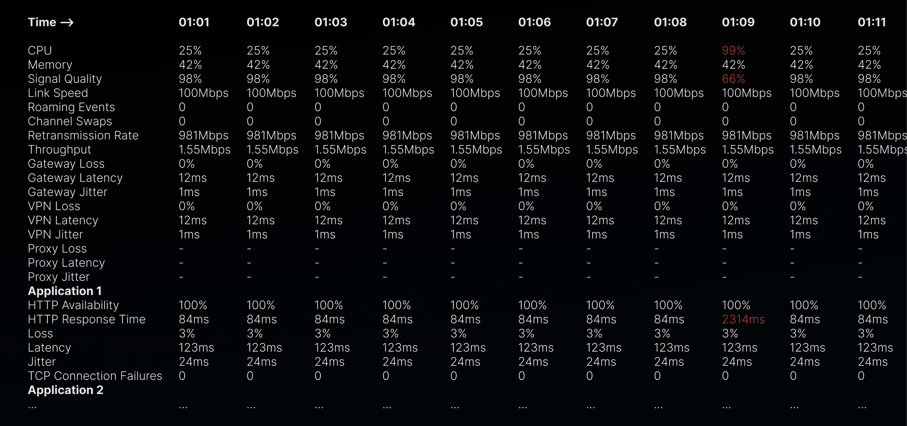

Executive summary
I designed the Single Agent View for End-User Monitoring: a dedicated troubleshooting experience for Tier 1 and Tier 2 IT teams investigating an individual employee’s connection problem.
Instead of asking support teams to infer a person’s experience from aggregate test data, the experience creates an agent-level lens across local network conditions, application performance, and the next best place to investigate.
The challenge
Existing scheduled tests provided an aggregated view of a group of endpoint agents testing a single application. This was useful for identifying broad issues, but it did not explain why one employee might be having a poor experience.
Each endpoint agent can have different local network conditions and different performance outcomes across applications. Helpdesk teams needed a way to move from a reported employee issue to relevant, agent-level network and application insights.

My role & strategic contribution
As the sole designer, I established the troubleshooting model and made it actionable across a range of customer maturity levels.
- Defined the agent-level information architecture and end-to-end interaction model
- Applied progressive disclosure to support rapid triage and deeper diagnostics
- Validated concepts with customers, usability testing, and engineering constraints
- Explored how AI summaries could accelerate the troubleshooting workflow
Reframing the problem
The design challenge was not “show more endpoint data.” It was to help a helpdesk professional construct a defensible explanation under pressure. I reframed the product around a troubleshooting sequence: identify the employee, assess their environment, connect signals across applications, and narrow the next investigation.
The design journey
Start with the person
The agent became the organizing unit, so the investigation stayed anchored in the reported issue.
Triage before detail
High-signal summaries support first response; layered views preserve the evidence specialists need.
Design for handoff
Clear context helps teams move from a symptom to an informed escalation without reassembling the story.
The solution
The Single Agent View brings agent-specific conditions and application performance into one investigation surface, helping support teams move from a reported connection issue to focused next steps.

Impact & reflection
The experience established a dedicated agent-level troubleshooting workflow where teams previously had to work backward from aggregate results.
Outcome metric placeholder: add customer task-success, reduction in time-to-triage, adoption, or qualitative validation evidence approved for public sharing.
Leadership reflection: Enterprise complexity becomes manageable when the interface reflects how work actually unfolds. My role was to make the investigation legible—not merely make all available telemetry visible.